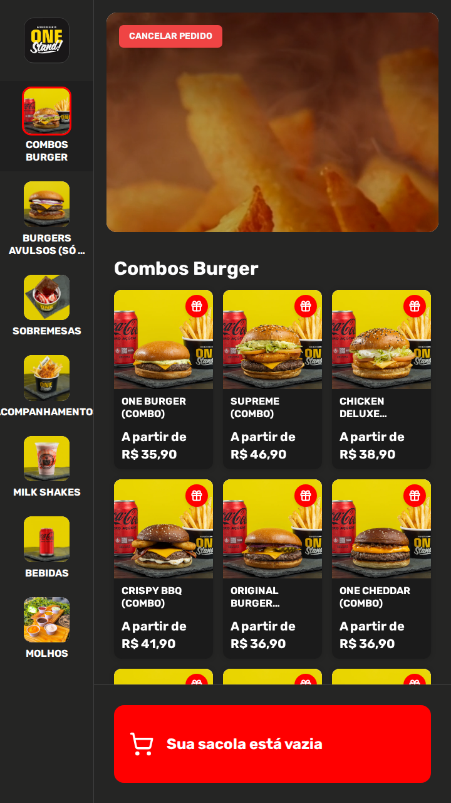

<!-- A capa nomeia o recurso e entrega os dois eixos na mesma linha: PEDIR e
     PAGAR. So "o cliente pede sozinho" seria meio recurso — cardapio de QR Code
     tambem faz pedir. O que o totem acrescenta e o pagamento terminar ali, e
     por isso o "e paga" e a palavra em vermelho.

     Nada aqui afirma nada sobre a loja de quem le: nao ha fila, nao ha
     atendente, nao ha economia prometida. Todas as frases sao do aparelho.

     A imagem e o APARELHO INTEIRO, e nao um recorte de tela. O assunto e uma
     pessoa de pe na frente de uma maquina: sem a maquina, a peca vira cardapio
     digital. O totem vai reto (mockups.md: armario em pe girado le como armario
     tombando) e centralizado.

     Na tela vai o CARDAPIO, e nao a tela de espera. A regra e da skill: na capa,
     tela cheia ganha de tela icone — a de espera e uma foto com um botao, e
     dentro de um aparelho de 360 px vira uma mancha escura com um risco
     vermelho. O cardapio tem foto, nome e preco em nove cartoes, e le como
     "aqui se compra" mesmo pequeno. A tela de espera passou para o CTA, que e
     onde o aparelho voltando a esperar o proximo cliente faz sentido.

     Sangra so pela COLUNA. O painel — leitor, impressora e pinpad — e o que faz
     a peca ler "autoatendimento" em vez de "tela grande", e por isso ele cabe
     inteiro dentro do slide; quem sai pela base e a coluna, que a borda de
     baixo transforma em chao.

     ====================================================================
     OS DOIS SELOS, E POR QUE ELES SAO CENA E NAO ETIQUETA
     ====================================================================

     Eles anunciam o que a peca entrega alem do pedido. Sao DESENHADOS, com a
     cor que a interface usa, e nao recortados da tela: o recorte real da linha
     de cupom tem 1032 px e, reduzido para caber nesta coluna, fica com 11 px de
     letra; aumentado, cobre o vidro, ou seja, nome e preco de produto.

     Cada selo tem DUAS ALTURAS: o nome do recurso grande, para ser lido na
     miniatura do feed, e o complemento em caixa alta pequena. Selo de uma linha
     so cabe em corpo 22 nesta coluna, e corpo 22 ao lado de um titulo de 68 nao
     e promessa, e legenda.

     O selo amarelo diz CASHBACK, e nao "5% de cashback". Os 5% sao a
     configuracao da loja de exemplo: dentro da captura do slide 6 eles saem da
     tela dela, mas num selo desenhado sairiam da nossa boca — e quem le
     entenderia que o sistema define a porcentagem.

     A primeira versao deles era texto com um painel atras, e o retorno foi
     exatamente esse. O que resolveu nao foi mais efeito, foi OCLUSAO: cada selo
     e uma `.selo-recurso--encaixado`, entra ~60 px atras da carcaca e a
     silhueta do aparelho corta a ponta. O gradiente escurece para essa ponta,
     porque tab que dobra para tras entra na sombra do totem.

     A luz vem depois, e tem tres camadas, cada uma com o seu modo de mistura:

     1. `.luz` da TELA, atras do aparelho: o cardaipio e uma tela acesa, e tela
        acesa derrama no escuro. E o que faz o totem parecer ligado;
     2. `.luz` UNICA no pe, que vai do vermelho do cupom ao amarelo do cashback.
        Duas pocas separadas deixavam dois adesivos em cenas diferentes; uma luz
        so poe os dois na mesma cena;
     3. `.luz--tinta` na CARCACA: `screen` sobre branco nao faz nada, entao o
        painel e tingido com `multiply` — vermelho do lado do cupom, ambar do
        lado do cashback. E esta a camada que prova que a luz bate no aparelho,
        e nao so no fundo.

     Mais a sombra de contato na quina, sem a qual o selo encosta no aparelho
     mas nao entra nele. Nenhuma das camadas passa por cima do VIDRO: ali mora
     nome e preco de produto, e lavar a tela e perder a unica prova da capa. -->

<div class="slide slide--capa">
  <div class="topo">
    <span class="logo"></span>
    <span class="contador">1 de 9</span>
  </div>

  <div class="pilha g24" style="margin-top: 22px; max-width: 900px">
    <span class="pilula">Totem de Autoatendimento</span>
    <h1 class="titulo titulo--medio">
      O cliente pede <span class="destaque">e paga</span><br>sozinho no totem
    </h1>
    <p class="subtitulo">E cada venda já sai puxando a próxima.</p>
  </div>

  <!-- 1. A tela acesa derrama no escuro. -->
  <div class="luz" style="left: 50%; top: 500px; width: 700px; height: 760px;
                          margin-left: -350px; filter: blur(52px);
                          background: radial-gradient(ellipse 42% 46% at 50% 48%,
                                      rgba(255, 168, 112, 0.5) 0%,
                                      rgba(255, 110, 70, 0.16) 58%,
                                      rgba(0, 0, 0, 0) 80%)"></div>

  <!-- 2. Uma luz so, do vermelho do cupom ao ambar do cashback. -->
  <div class="luz" style="left: -80px; right: -80px; top: 620px; height: 780px;
                          filter: blur(60px);
                          background:
                            radial-gradient(ellipse 34% 40% at 17% 38%,
                              rgba(255, 86, 74, 0.8), rgba(0, 0, 0, 0) 70%),
                            radial-gradient(ellipse 34% 40% at 83% 58%,
                              rgba(255, 196, 56, 0.74), rgba(0, 0, 0, 0) 70%),
                            radial-gradient(ellipse 60% 24% at 50% 80%,
                              rgba(255, 140, 70, 0.28), rgba(0, 0, 0, 0) 72%)"></div>

  <div class="selo-recurso selo-recurso--encaixado selo-recurso--com-icone"
       style="left: 30px; top: 600px; width: 440px;
              padding: 22px 112px 22px 26px;
              background: linear-gradient(104deg, #ff8078 0%, #f2483f 46%,
                                          #a3201a 100%);
              color: #fff;
              box-shadow: 0 0 70px -12px rgba(255, 90, 80, 0.95),
                          0 26px 44px -22px #000,
                          inset 0 2px 0 rgba(255, 255, 255, 0.4)">
    <span class="selo-recurso__icone"
          style="background: rgba(255, 255, 255, 0.22)">
      <svg viewBox="0 0 24 24">
        <path d="M3 9.2V6.9a1.3 1.3 0 0 1 1.3-1.3h15.4A1.3 1.3 0 0 1 21 6.9v2.3a2.8 2.8 0 0 0 0 5.6v2.3a1.3 1.3 0 0 1-1.3 1.3H4.3A1.3 1.3 0 0 1 3 17.1v-2.3a2.8 2.8 0 0 0 0-5.6z"/>
        <path d="M14.6 6v1.9M14.6 11.1V13M14.6 16.1V18"/>
      </svg>
    </span>
    <span class="selo-recurso__texto">
      <span class="selo-recurso__nome" style="font-size: 48px">Cupom</span>
      <span class="selo-recurso__nota" style="font-size: 21px">de desconto</span>
    </span>
  </div>

  <div class="selo-recurso selo-recurso--encaixado selo-recurso--com-icone"
       style="right: 30px; top: 910px; width: 440px;
              padding: 22px 26px 22px 112px;
              background: linear-gradient(256deg, #ffefb0 0%, #ffd23f 46%,
                                          #c08a05 100%);
              color: #1c1c1c;
              box-shadow: 0 0 70px -12px rgba(255, 205, 70, 0.95),
                          0 26px 44px -22px #000,
                          inset 0 2px 0 rgba(255, 255, 255, 0.75)">
    <span class="selo-recurso__icone" style="background: rgba(28, 28, 28, 0.14)">
      <svg viewBox="0 0 24 24">
        <path d="M21.2 12a9.2 9.2 0 1 1-2.7-6.5"/>
        <path d="M21.3 3.6v4.3h-4.3"/>
        <path d="M15.2 9h-4.3a1.9 1.9 0 0 0 0 3.8h2.5a1.9 1.9 0 0 1 0 3.8H8.8"/>
        <path d="M12 7.1v11.4"/>
      </svg>
    </span>
    <span class="selo-recurso__texto">
      <span class="selo-recurso__nome" style="font-size: 42px">Cashback</span>
      <span class="selo-recurso__nota" style="font-size: 20px">próxima compra</span>
    </span>
  </div>

  <div class="sangria" style="top: 540px; right: auto; left: 50%;
                              transform: translateX(-50%)">
    <div class="totem" style="width: 360px; --coluna: 240px">
      <div class="totem__tela">
        
      </div>
      <div class="totem__painel">
        <span class="totem__leitor"></span>
        <span class="totem__impressora"></span>
        <span class="totem__pinpad">
          <span class="totem__tecla"><span></span><span></span><span></span></span>
          <span class="totem__tecla"><span></span><span></span><span></span></span>
          <span class="totem__tecla"><span></span><span></span><span></span></span>
        </span>
      </div>
      <div class="totem__coluna"></div>
      <div class="totem__base"></div>
    </div>
  </div>

  <!-- 3. A luz bate na carcaca. Só sobre o painel, nunca sobre o vidro. -->
  <div class="luz luz--tinta"
       style="left: 360px; top: 1110px; width: 360px; height: 145px;
              filter: blur(22px);
              background: linear-gradient(90deg,
                          rgba(255, 128, 116, 0.8) 0%,
                          rgba(255, 255, 255, 0) 42%,
                          rgba(255, 255, 255, 0) 60%,
                          rgba(255, 214, 104, 0.75) 100%)"></div>

  <!-- O beijo de luz na quina em que o selo some: metade cai no fundo escuro
       (e acende) e metade na carcaca branca (e nao muda nada). -->
  <div class="luz" style="left: 330px; top: 580px; width: 54px; height: 154px;
                          z-index: 2; filter: blur(13px);
                          background: radial-gradient(ellipse 40% 50% at 60% 50%,
                                      rgba(255, 150, 140, 0.95),
                                      rgba(0, 0, 0, 0) 72%)"></div>

  <div class="luz" style="left: 696px; top: 890px; width: 54px; height: 154px;
                          z-index: 2; filter: blur(13px);
                          background: radial-gradient(ellipse 40% 50% at 40% 50%,
                                      rgba(255, 219, 130, 0.95),
                                      rgba(0, 0, 0, 0) 72%)"></div>

  <!-- Sombra de contato: sem ela o selo encosta no aparelho, mas nao entra. -->
  <div class="luz luz--tinta"
       style="left: 360px; top: 600px; width: 30px; height: 114px;
              filter: blur(9px);
              background: linear-gradient(90deg, rgba(60, 20, 18, 0.55),
                          rgba(255, 255, 255, 0) 85%)"></div>

  <div class="luz luz--tinta"
       style="left: 690px; top: 910px; width: 30px; height: 114px;
              filter: blur(9px);
              background: linear-gradient(270deg, rgba(60, 44, 10, 0.5),
                          rgba(255, 255, 255, 0) 85%)"></div>
</div>
